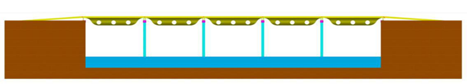
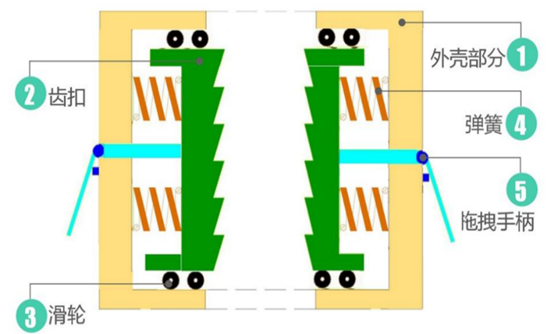
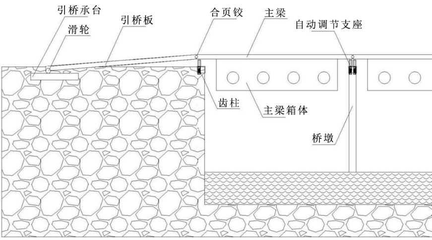

三级项目选题：《基于 TRIZ 理论的自适应浮桥结构及其施工方法》

浮桥是人类历史上最古老的桥梁形式之一，它利用水浮力的自然规律支承自身恒载及活载，以浮动基础代替复杂的水下固定基础。目前国内黄河流域、松花江水系已建造近百座季节性临时浮桥，国外永久或半永久性大型浮桥已达 20 座之多，最大桥长达 2000m 以上。
浮桥因架设速度快、跨越江河障碍性能好、承载能力大、便于拆卸、使用灵活等优点，在经济落后、交通基础设施不完善的偏远地区得到广泛应用。
本项目立足西部大开发与乡村振兴，针对西南山区汛期浮桥易损毁、传统技术被动适应的矛盾，运用 TRIZ 理论得出最优方案。

外壳、齿扣、滑轮、弹簧、拖拽手柄五大部分

引桥承台、滑轮、引桥板、合页铰、主梁、齿柱与桥墩
主梁箱体通过自动调节高度支座架设在桥墩上